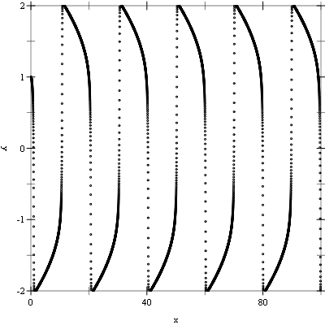
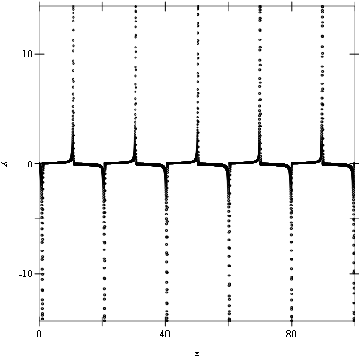
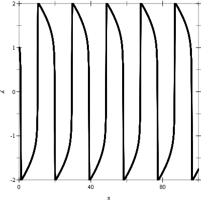
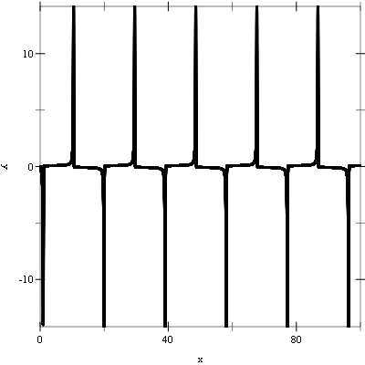

10 Ordinary Differential Equations
This chapter describes the functions for solving ordinary differential equation (ODE) initial value problems provided by the Science Collection. The functions include a variety of low-level methods, such as Runge-Kutta and Bulirsch-Stoer routines, and higher level components for adaptive step-size control. The components can be combined by the user to achieve the desired solution with full access to any intermediate steps, as needed.
The functions described in this chapter are defined in the "ode-initval.rkt" file in the Science Collection and are made available using the form:
| (require (planet williams/science/ode-initval)) |
10.1 Defining the ODE System
The routines solve the general n-dimensional first-order system:
dyi(t)/dt = fi(t, y1(t), ..., yn(t))
for i = 1, ..., n. The stepping functions rely on the vector of derivatives fi and the Jacobian matrix Jij = dfi(t, y(t))/dyj. A system of equations is defined using the ode-system structure.
struct
(struct ode-system (function jacobian dimension params) #:extra-constructor-name make-ode-system) function : (-> real? real? (vectorof real?) (listof any/c) any)
jacobian :
(or/c (-> real? real? (vectorof real?) (vectorof real?) (listof any/c) any) false/c) dimension : exact-positive-integer? params : (listof any/c)
function—
a function (lambda (t y dydt params) ...). This function should store the elements of fi(t, y, params) in the vector dydt, for arguments t and y and parameters params. jacobian—
a function (lambda (t y dfdy dfdt params) ...). This function should store the elements of dfi(t, y, params)/dt in the vector dfdt and the Jacobian matrix Jij in the vector dfdy as a row-major matrix Jij = dfdy(i * dimension + j), where dimension is the dimension of the system. Some of the simpler solver algorithms do not make use of the Jacobian matrix, so it is not always strictly necessary to provide it. The jacobian field of the structure can be #f for those algorithms. However, it is useful to provide the Jacobian to allow the solver algorithms to be interchanged. The best algorithms make use of the Jacobian. dimension—
the dimension of the system of equations. params—
a list if the arbitrary parameters of the system.
procedure
(ode-system-function-eval ode-system t y dydt) → void? ode-system : ode-system? t : real? y : (vectorof real?) dydt : (vectorof real?)
(unchecked-ode-system-function-eval ode-system t y dydt) → void? ode-system : ode-system? t : real? y : (vectorof real?) dydt : (vectorof real?)
procedure
(ode-system-jacobian-eval ode-system t y dydt dfdt) → void? ode-system : ode-system? t : real? y : (vectorof real?) dydt : (vectorof real?) dfdt : (vectorof real?)
(unchecked-ode-system-jacobian-eval ode-system t y dydt dfdt) → void? ode-system : ode-system? t : real? y : (vectorof real?) dydt : (vectorof real?) dfdt : (vectorof real?)
10.1.1 Stepping Functions
The lowest level components are the stepping functions that advance a solution from time t to t + h for a fixed step size h and estimate the resulting local error.
procedure
(ode-step-type? x) → boolean?
x : any/c
procedure
(make-ode-step step-type dim) → ode-step?
step-type : ode-step-type? dim : exact-non-negative-integer?
procedure
(ode-step-reset step) → void?
step : ode-step? (unchecked-ode-step-reset step) → void? step : ode-step?
procedure
(ode-step-name step) → string?
step : ode-step?
procedure
(ode-step-order step) → natural-number/c
step : ode-step?
procedure
(ode-step-apply step t h y y-err dydt-in dydt-out dydt) → void? step : ode-step? t : real? h : real? y : (vector-of real?) y-err : (vector-of real?) dydt-in : (vector-of real?) dydt-out : (vector-of real?) dydt : ode-system?
(unchecked-ode-step-apply step t h y y-err dydt-in dydt-out dydt) → void? step : ode-step? t : real? h : real? y : (vector-of real?) y-err : (vector-of real?) dydt-in : (vector-of real?) dydt-out : (vector-of real?) dydt : ode-system?
The following stepping algorithms are available.
syntax
syntax
syntax
10.2 Adaptive Step-Size Control
The control function examines the proposed changes to the solution and its error estimate produced by a stepping function and attempts to determine the optimal step size for a user-specified level of error.
procedure
(standard-control-new eps-abs eps-rel a-y a-dydt) → ode-control? eps-abs : real? eps-rel : real? a-y : real? a-dydt : real?
The step size adjustment procedure for this method begins by computing the desired error level Di, for each component
Di = epsabs + epsrel × (ay|yi| + adydth|y′i|)
and comparing it with the observed error Ei = |yerri|. If the observed error E exceeds the desired error level D by more than 10% for any component, then the method reduces the step size by an appropriate factor
hnew = hold × S × (E/D)-1/q
where q is the consistency order of the method (e.g., q = 4 for 4(5) embedded RK), and S is a safety factor of 0.9. The ratio E/D is taken to be the maximim of the ratios Ei/Di.
If the observed error E is less than 50% of the desired level D for the maximum ratio Ei/Di, then the algorithm takes the opportunity to increase the step size to bring the error in line with the desired level
hnew = hold × S × (E/D)-1/(q+1).
This emcompasses all the standard scaling methods. To avoid uncontrolled changes in the step size, the overall scaling factor is limited to the range ⅕ to 5.
procedure
(control-y-new eps-abs eps-rel) → ode-control?
eps-abs : real? eps-rel : real?
procedure
(control-yp-new eps-abs eps-rel) → ode-control?
eps-abs : real? eps-rel : real?
procedure
(make-ode-control control-type) → ode-control?
control-type : ode-control-type?
procedure
(ode-control-init control eps-abs eps-rel a-y a-dydt) → any control : ode-control? eps-abs : real? eps-rel : real? a-y : real? a-dydt : real?
procedure
(ode-control-h-adjust control step y y-err dydt h) → (integer-in -1 1) control : ode-control? step : ode-step? y : (vector-of real?) y-err : (vector-of real?) dydt : (vector-of real?) h : box?
procedure
(ode-control-name control) → string?
control : ode-control?
(printf ("control method is '~a'~n" (ode-control-name control)))
would print something like
control method is 'standard' |
10.3 Evolution
The highest-level of the system is the evolution function that combines the results of a stepping function and control function to reliably advance the solution forward over an interval (t0, t1). If the control function signals that the step size should be decreased, the evolution function backs out of the current step and tries the proposed smaller step size. This process is continued until an acceptable step size is found.
procedure
(make-ode-evolve dim) → ode-evolve?
dim : exact-positive-integer?
procedure
(ode-evolve-count evolve) → exact-nonnegative-integer?
evolve : ode-evolve?
procedure
(ode-evolve-failed-steps evolve) → exact-nonnegative-integer?
evolve : ode-evolve?
procedure
(ode-evolve-apply evolve control step system t t1 h y) → any evolve : ode-evolve? control : ode-control? step : ode-step? system : ode-system? t : box? t1 : real? h : box? y : (vector-of real?)
(unchecked-ode-evolve-apply evolve control step system t t1 h y) → any evolve : ode-evolve? control : ode-control? step : ode-step? system : ode-system? t : box? t1 : real? h : box? y : (vector-of real?)
procedure
(ode-evolve-reset evolve) → any
evolve : ode-evolve? (unchecked-ode-evolve-reset evolve) → any evolve : ode-evolve?
10.4 ODE Examples
Example: The following programs solve the second-order nonlinear Van der Pol oscillator equation
x”(t) + μx′(t)(x(t)2 - 1) + x(t) = 0.
This can be converted into a first order system suitable for use with the routines described in this chapter by introducing a separate variable for the velocity, y = x′(t)
x′ = y
y′ = -r + μy(1 - x2).
The following example integrates the above system of equations from t = 0.0 to 100.0 in increments of 0.01 using a 4th order Runge-Kutta stepping function.
#lang racket (require (planet williams/science/ode-initval) plot) (define (func t y f params) (let ((mu (car params)) (y0 (vector-ref y 0)) (y1 (vector-ref y 1))) (vector-set! f 0 y1) (vector-set! f 1 (- (- y0) (* mu y1 (- (* y0 y0) 1.0)))))) (define (main) (let* ((type rk4-ode-type) (step (make-ode-step type 2)) (mu 10.0) (system (make-ode-system func #f 2 (list mu))) (t 0.0) (t1 100.0) (h 0.01) (y (vector 1.0 0.0)) (y-err (make-vector 2)) (dydt-in (make-vector 2)) (dydt-out (make-vector 2)) (y0-values '()) (y1-values '())) (ode-system-function-eval system t y dydt-in) (let loop () (when (< t t1) (ode-step-apply step t h y y-err dydt-in dydt-out system) (set! y0-values (cons (vector t (vector-ref y 0)) y0-values)) (set! y1-values (cons (vector t (vector-ref y 1)) y1-values)) (vector-set! dydt-in 0 (vector-ref dydt-out 0)) (vector-set! dydt-in 1 (vector-ref dydt-out 1)) (set! t (+ t h)) (loop))) (printf "~a~n" (plot (points y0-values) #:x-min 0.0 #:x-max 100.0 #:x-label "X" #:y-min -2.0 #:y-max 2.0 #:y-label "Y")) (printf "~a~n" (plot (points y1-values) #:x-min 0.0 #:x-max 100.0 #:x-label "X" #:y-label "Y"))))
The following figures show the resulting plots.


Example: The following example evolves the above system of equations from t = 0.0 to 100.0 maintaining an error in the y values of 10-6 using a 4th order Runge-Kutta stepping function.
#lang racket (require (planet williams/science/ode-initval) plot) (define (func t y f params) (let ((mu (car params)) (y0 (vector-ref y 0)) (y1 (vector-ref y 1))) (vector-set! f 0 y1) (vector-set! f 1 (- (- y0) (* mu y1 (- (* y0 y0) 1.0)))))) (define (main) (let* ((type rk4-ode-type) (step (make-ode-step type 2)) (control (control-y-new 1e-006 0.0)) (evolve (make-ode-evolve 2)) (mu 10.0) (system (make-ode-system func #f 2 (list mu))) (t (box 0.0)) (t1 100.0) (h (box 1e-006)) (y (vector 1.0 0.0)) (y0-values '()) (y1-values '())) (let loop () (when (< (unbox t) t1) (ode-evolve-apply evolve control step system t t1 h y) (set! y0-values (cons (vector (unbox t) (vector-ref y 0)) y0-values)) (set! y1-values (cons (vector (unbox t) (vector-ref y 1)) y1-values)) (loop))) (printf "Number of iterations = ~a~n" (ode-evolve-count evolve)) (printf "Number of failed steps = ~a~n" (ode-evolve-failed-steps evolve)) (printf "~a~n" (plot (points y0-values) #:x-min 0.0 #:x-max 100.0 #:x-label "X" #:y-min -2.0 #:y-max 2.0 #:y-label "Y")) (printf "~a~n" (plot (points y1-values) #:x-min 0.0 #:x-max 100.0 #:x-label "X" #:y-label "Y"))))
The following shows the printed output and resulting plots.
Number of iterations = 84575 |
Number of failed steps = 352 |

